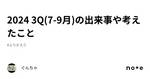
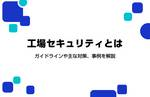
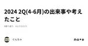
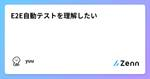
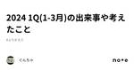

直近1週間の更新
10/24 (木)

スクラム祭りの打ち合わせ(9回目)をしてきた 天の月
aki-m.hatenadiary.com こちらの打ち合わせをしてきたので、会の様子と感想を書いていこうと思います。 メールアドレス作成 Google Groupを作り実行委員のメンバーを追加しました。また、権限設定をして追加した実行委員のメンバーは全員Groupのオーナーとなるようにしました。 Xのアカウント立ち上げ Tweets by scrummatsuri x.com Google Groupではメールアドレス登録ができなかったので、gmailアカウントを一つ作って、そのアカウントでXの登録をしました。(Google Groupのメール受信設定を弱めてみましたがメールが来ず...) …
10時間前

はじめてのPodcast produced by 亀井さん honamin
noteはだいぶご無沙汰しております。honaminです。 今もオープンロジという会社で引き続きQAエンジニアをやっています。今後1年間はテスト自動化メインで活動する予定です。例にも漏れず We are hiring!なので一緒に働いてくれる人をいつも募集しています。QAエンジニアだけでなくSREさんも激しく募集しています。一緒に信頼性を上げてくれる方ぜひ。 採用情報 | OPENLOGI | 株式会社オープンロジOPENLOGI | 株式会社オープンロジテクノロジーを使い サイロ化された物流をネットワーク化しデータを起点に物の流れを革新するcorp.openlogi.com 続きをみる
14時間前

GIHOZアップデート情報：テスト観点ツリーでテスト観点や線の色が変更可能に、テストモデル・ケース仕様のコピー動作を改善など GIHOZ’s blog
日頃からテスト技法ツールGIHOZをご利用いただき誠にありがとうございます。 また、ご感想やフィードバックをいただき誠にありがとうございます。 最新のアップデート情報をお知らせします。 テスト観点ツリーでテスト観点や線の色が変更可能になりました テスト観点ツリーやサブツリー内のテスト観点や線の色を変更できるようになりました。これにより、テスト観点の重要度などを色で表現でき、視覚的に分かりやすいテスト観点ツリーやサブツリーを作成することが可能になりました。 テスト観点ツリーやサブツリー内のテスト観点や線を選択することで、テスト観点ツリー編集エリアの左下から色を変更できます。色の変更はテスト観点ツ…
1日前
Visual Stdio Codeを使ってDeno testをDebugで活用する 2024/10版 1Zennの「Test」のフィード
1Zennの「Test」のフィード
要約 この文書では、下記の情報を取り扱う。 Visual Studio Codeを使って、TypeScriptランタイム環境のDenoのunittestをするときにデバッガーを使えるように設定する。 いわゆるモノレポ形式のリポジトリで、Visual Studio Codeのデバッガーの設定ファイルのdeno testの設定例を提示し、説明する。 Visual Studio Codeの「ワークスペース」でDenoの設定について提示し、考察する。 Denoの権限管理(permissions)について、deno testでどのように扱うかを考察する。 denoの設定ファイル、deno.j...
1日前

2024 3Q(7-9月)の出来事や考えたこと ぐんちゃ
今までどんなことをしてきたかnoteに雑に残しておきたくなったので、2022年と2023年は年度単位、2024年はQ単位で雑に残しておく。 こういった雑な記事から切り取ったものを、いつかもっとしっかりした記事にしたい。 7月 続きをみる
1日前
10/23 (水)

yr-learning Vol39に参加してきた 天の月
yr-camp.connpass.com こちらのイベントに参加してきたので、会の様子と感想を書いていこうと思います。 雑談 @Customer DIP違反 全体を通した感想 雑談 今日は矢田さんが久しぶりに来たということもあって、40分近く雑談をしていました笑 若手というと25歳くらいの印象があるんだけれど、20代(28歳、29歳...)で若手というのはどうなんだろうか？という話をしていきました 来たるイベントがあるのですが、参加者の様子がなんかおかしいぞ...という話をしていました。当初は二人でペアプロできるなんてすごく楽しみ！と思っていたのですが、自分はどんどんペアプロするのが心配になっ…
1日前

2024.10.23ナレッジNEW 工場セキュリティとは。ガイドラインや主な対策、事例を解説 工場セキュリティ セキュリティ サイバーセキュリティ ITシステム 工場システム ナレ... メディア | HQW!
2024.10.23 ナレッジ NEW 工場セキュリティとは。ガイドラインや主な対策、事例を解説 工場セキュリティ セキュリティ サイバーセキュリティ ITシステム 工場システム ナレッジ
2日前
お久しぶりな投稿。 Testan4818
近況と今後？ 前回の投稿を見てみると、２カ月前（汗 noteを開始したきっかけは、自分の備忘録の位置づけでした。 備忘録なので、特に思い出す必要もないかと思えるものはかかなくてもいいかなと思って２カ月。 人間サボりだすとダメですね（苦笑 TOPの写真は、数年前にいったベトナムで飲んだサトウキビジュース。 機会があれば、ベトナムはまた行ってみたい。 続きをみる
2日前
10/22 (火)

大人のソフトウェアテスト雑談会 #235【おばけ】に参加してきた 天の月
ost-zatu.connpass.com 今週もテストの街葛飾に行ってきたので、会の様子と感想を書いていこうと思います。 怖い参加者 出世するQAエンジニアと良いQAエンジニア おおひらさんのプロポーザル RSGT 葛飾例大祭 全体を通した感想 怖い参加者 creationline.connpass.com 今度こちらのイベントを開催するのですが、その経緯やコスプレをするのか？という話をしていきました。ただ、よく見ると参加者の人たちは怖い人たちばかりなので、当日が楽しみではなくなってきました笑 出世するQAエンジニアと良いQAエンジニア お金の使い方が上手な(経営目線で予算を立てられるような…
2日前

JSTQB(ソフトウェアテスト技術者資格認定組織)は、Foundation Level シラバスVersion 2023V4.0を適用した試験を11月1日(金)より開始いたします 特定非営利活動法人ソフトウェアテスト技術振興協会【プレスリリース】 by PR TIMES
[特定非営利活動法人ソフトウェアテスト技術振興協会] JSTQB(ソフトウェアテスト技術者資格認定組織)は、11 月 1 日（金）よりFoundation Level シラバスVersion 2023V4.0を適用した試験を開始いたします。お申込みは10 月 31 日（木）午前中からとなります。 ■JSTQB ...
3日前
10/21 (月)

開発者完全性仮説とは
Zennの「QA」のフィード
はじめに 本記事は、「開発者完全性仮説」という概念について説明します。 開発者完全性仮説は、ソフトウェア開発、その中でも品質保証に従事するプロフェッショナルとして向き合っていくべき大切な概念です。 開発者完全性仮説は品質保証に従事する人々の職場での存在意義を揺さぶり、自分自身がどのように価値を残しているのかを改めて言語化するのに役立ちます。 開発者完全性仮説の原典 開発者完全性仮説とは、以下の引用文で端的に表せます。 「開発者が完璧だったらテストやQAはいらない」 「完璧なスクラムチームだったら（以下略）」 JaSST nano vol.13 #4「もうQAはいらない」ってホ...
4日前

(オンライン読書会) これが現象学だに参加してきた 天の月
educational-psychology.connpass.com こちらのイベントに参加してきたので、会の様子と感想を書いていこうと思います。 理解不可能性 驚愕 フロイトとの結びつき 異他性と自分 全体を通した感想 理解不可能性 自分と異なった世界に属しているのかという判断基準の一つとして理解不可能性が語られていますが、「Aだ！」と思ってもBだった場合などは理解不可能性があると言えるのだろうか？という話をしました。(例えば違う種族である犬であっても、行動を勝手に解釈して「理解した」と判断することがある) 明確な答えはないものの、理解した！と思ったら勘違いというよりは、異なる場所で異なる…
4日前
Unable to connect: Adaptive Server is unavailable or does not exist Zennの「Test」のフィード
Unable to connect: Adaptive Server is unavailable or does not exist (ホスト名) (TinyTds::Error)がrailsのコンソールででる Ruby・Rails で開発をしている時に、テスト用のDBサーバ(SQLServer)を使用していると、コンソールで上記のエラーが出たので共有します。 https://github.com/rails-sqlserver/tiny_tds/issues/218 上記のサイトでも似たようなエラーが見られますが、Azure を私は使っていないし、日本語じゃないしで全然わからなか...
4日前
10/20 (日)

2024 2Q(4-6月)の出来事や考えたこと ぐんちゃ
今までどんなことをしてきたかnoteに雑に残しておきたくなったので、2022年と2023年は年度単位、2024年はQ単位で雑に残しておく。 こういった雑な記事から切り取ったものを、いつかもっとしっかりした記事にしたい。 4月 続きをみる
4日前

SREをはじめよう ―個人と組織による信頼性獲得への第一歩~ Forkwell Library#70に参加してきた 天の月
forkwell.connpass.com 会の概要 会の様子 山口さんの講演 こういう本ではない 翻訳の裏話 著者の話 第一部 第二部 第三部 パネルディスカッション RoleとしてSREが存在してない組織で必要性をどのような軸で判断するのが良いのか？上層部がエンジニアリングに詳しくないなら必要性はどう伝えればいいのか？ SREに向いている人は？ SREの文化がなかった組織で始まるにあたって、プロジェクトチームに対して、SREのロールを与えられた人はプロジェクトチームに対してどのようなアプローチから始めるべきか？ SREの職種が面白いと思えるポイントは？ SREはどんな組織にも必要か？ SR…
4日前
コピペは楽だがバグの元 かいり
まずはじめに、この記事においては開発者に対して時々言われるような「コピー＆ペースト（以下コピペ）はするべきではない」といった趣旨のことは書きません。ただ、事実としてミス、ひいてはバグに繋がることがある行動ではあると思っているので、そのこととテストする際に気にする点がお伝えできたらいいなと思います。 少しでも参考になれば幸いです。 続きをみる
4日前
第304回： にしさんの教え Kouichi Akiyama
≡ はじめに 連載「ALTAのテキストをつくろう」を1回お休みして、今週は、2024/10/18に発売したばかりの『にしさんの教え』という本の紹介をします。 続きをみる
5日前
10/19 (土)

RSGT2025で発表できることになりました 天の月
タイトルの通り、RSGT2025に出していたプロポーザルが採択されて発表できることになったので、今日はその告知です。 confengine.com 発表概要 自分が外部アジャイルコーチとして現場に入るとき多く聞く要望の一つに、「チームや組織がどれくらいアジャイルになっているのかを客観的に評価してほしい」があります。(特にアジャイルチームを立ち上げてちょっと時間が経っている現場では多い印象です) しかし、評価を求めている動機によっては、評価をしても何も成果をあげられなかったり、最悪の場合はアジャイルな組織やチームから後退する可能性もあります。 例えば、以下のような動機は自分の経験上、評価をするこ…
5日前

E2E自動テストを理解したい 1Zennの「Test」のフィード
はじめに E2E（End-to-End）自動テストは、ソフトウェア開発における重要な品質保証手法の一つです。 しかし、その導入と実践には多くの課題があります。 本記事では、E2E 自動テストの基本的な概念から実践的なテクニックまでを包括的に理解するために、私が様々な書籍や記事から学んだ内容を言語化したものです。 具体的には、以下の内容を取り上げます： E2E テストとは何か、その特徴とメリット・デメリット E2E テスト導入の戦略と継続的テストの概念 テストコードの作成方法と注意点 信頼性の高いテストを作るためのテクニック テストコードの可読性を高めるための方法 E2E テス...
6日前
10/18 (金)

スクラムカンファレンスの歩き方に参加してきた 天の月
スクラムカンファレンスの歩き方 - connpass こちらのイベントに参加してきたので、会の様子と感想を書いていこうと思います。 会の概要 会の様子 川口さんの講演 スライド 歩き方 RSGTという場で重視していること セッションのカテゴリ 基調講演 OST 参加者の獲得 正義さんの講演 スライド スクラムフェスの全体感 オンラインの原体験 プロポーザルを眺める オフラインとオンラインの差 無理はしない Mahoさんの講演 なぜGSGに行ったのか？ 参加する心境の変化 学んだこと おすすめの歩き方 会全体を通した感想 会の概要 以下、イベントページから引用です。 株式会社タイミーは「一人ひと…
6日前

2024 1Q(1-3月)の出来事や考えたこと ぐんちゃ
今までどんなことをしてきたかnoteに雑に残しておきたくなったので、2022年と2023年は年度単位、2024年はQ単位で雑に残しておく。 こういった雑な記事から切り取ったものを、いつかもっとしっかりした記事にしたい。 1月 続きをみる
6日前


Ranorex ハンズオンセミナー オンデマンド配信が始まりました Ranorex Blog - UIテスト自動化ツール Ranorex
テクマトリックスでは、Ranorex を初めてご利用いただく方に向け、無償のハンズオンセミナーを定期開催しています。2024年からは中級コースも追加され、Ranorexのより深い機能まで無償で学べるようになりました。 こ […] The post Ranorex ハンズオンセミナー オンデマンド配信が始まりました first appeared on UIテスト自動化ツール Ranorex.
7日前